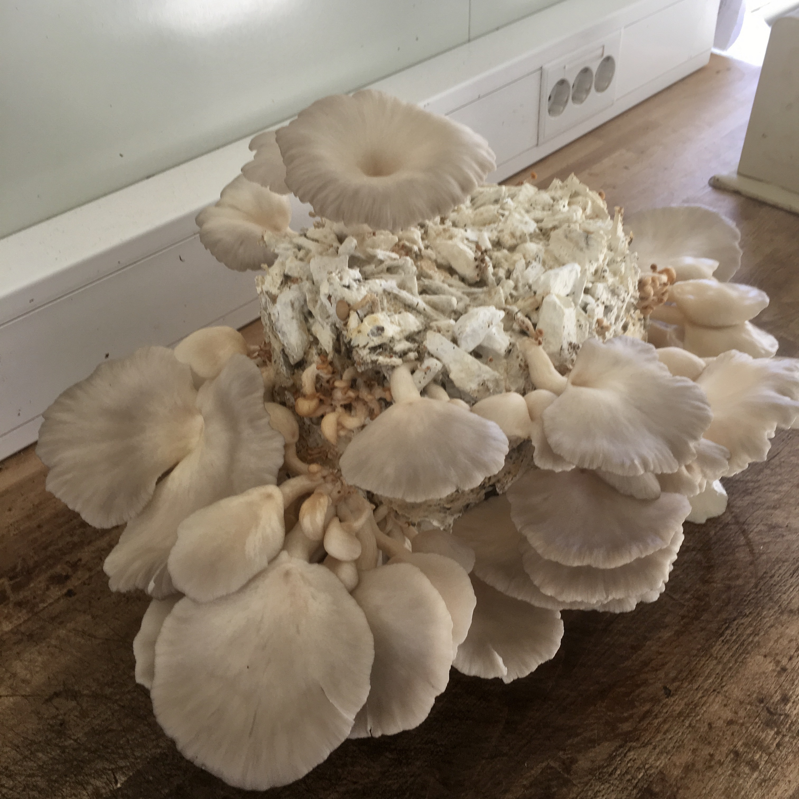
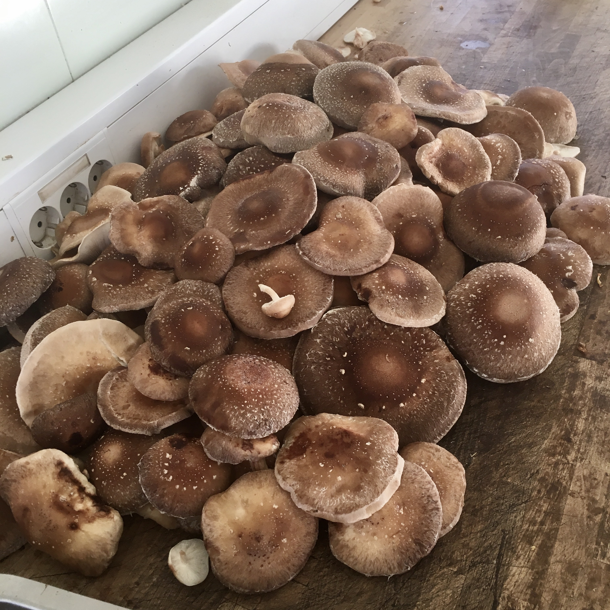
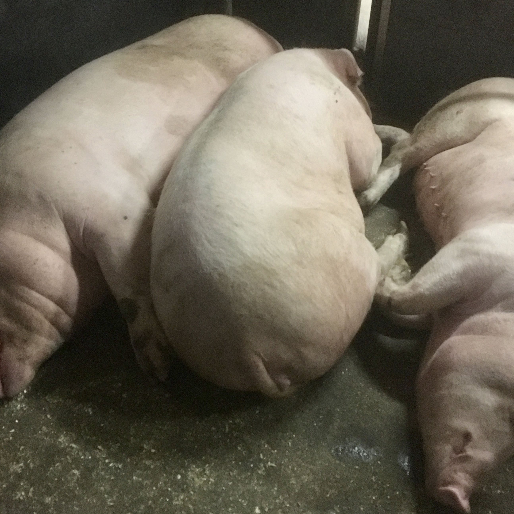

Vi dyrker Kongeøster, vinterøster og shiitake, og prøver nye
sopper etter ønske, feks jusas øre og flamingoøsters. Dette
dyrkes på substrat fra nærområdet, som sagflis, korn, gips og
kalk. Soppen har eget vinterrom der den står i mørket uten mye
fukt. Så flyttes den til sommerrommet med masse lys og vann.
Denne prosessen tar ca 3 måneder. Så høstes soppen til
resturantene rundt om i landet. Soppen vil inneholde mindre vann
enn annen sopp ettersom det tar mye lengre tid å produsere.
Soppen har en mild smak med en nyans av buljong, og har
konsistens som kyllingkjøtt

Vi dyrker Kongeøster, vinterøster og shiitake, og prøver nye
sopper etter ønske, feks jusas øre og flamingoøsters. Dette
dyrkes på substrat fra nærområdet, som sagflis, korn, gips og
kalk. Soppen har eget vinterrom der den står i mørket uten mye
fukt. Så flyttes den til sommerrommet med masse lys og vann.
Denne prosessen tar ca 3 måneder. Så høstes soppen til
resturantene rundt om i landet. Soppen vil inneholde mindre vann
enn annen sopp ettersom det tar mye lengre tid å produsere.
Soppen har en mild smak med en nyans av buljong, og har
konsistens som kyllingkjøtt

På gården har vi ca 400 gris, og et utvalg av disse blir foret
på soppsubstrat og sopp som ikke kan selges videre til kunder.
Ettersom sopp er vanndrivende så gir det en helt spesiel smak på
kjøttet. Og grisen spiser dette mer enn gjerne. Kokkene får
velge størrelse på grisen selv- mellom 30-130kg.